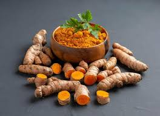

Kunyit atau kunir, (Curcuma longa Linn. syn. Curcuma domestica Val.), adalah termasuk salah satu tanaman rempah-rempah dan obat asli dari wilayah Asia Tenggara. Tanaman ini kemudian mengalami penyebaran ke daerah Malaysia, Indonesia, Australia bahkan Afrika. Hampir setiap orang Indonesia dan India serta bangsa Asia umumnya pernah mengonsumsi tanaman rempah ini, baik sebagai pelengkap bumbu masakan, jamu atau untuk menjaga kesehatan dan kecantikan.
Kunyit tergolong dalam kelompok jahe-jahean, Zingiberaceae. Kunyit dikenal di berbagai daerah dengan beberapa nama lokal, seperti turmeric (Inggris), kurkuma (Belanda), kunyit (Indonesia dan Malaysia), janar (Banjar), kunir (Jawa), koneng (Sunda), konyet (Madura), Kunyir (Komering)